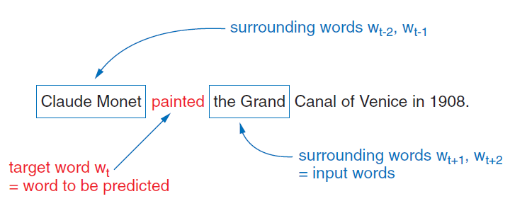
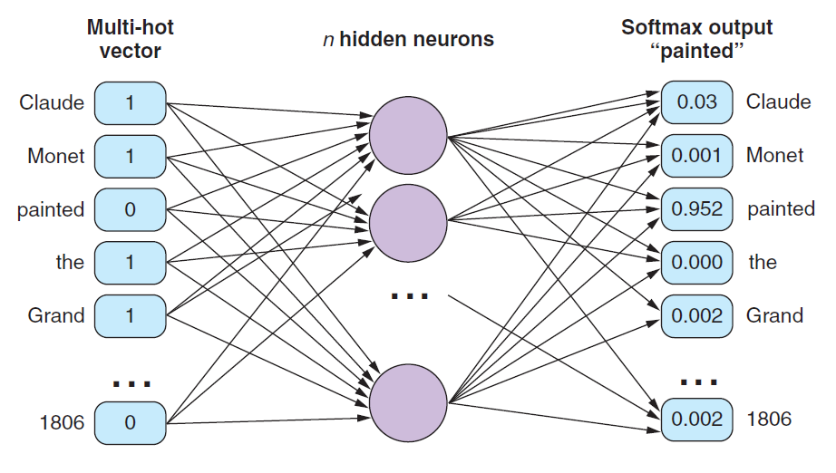

5.3 Word2Vec CBOW
Predict the middle word from its neighbors.
These notes walk through the lecture slides. The original deck is unchanged; use (slides) on the course hub if you want that PDF.
1. Predict the center word
Continuous bag of words (CBOW) is one of the two Word2Vec training tasks. Given the words around a position, predict the word in that position.
“Continuous” means the context is a dense combination of embeddings, not a sparse count bag. “Bag” means the context words are pooled. Order inside the window is not modeled.
Skip-gram (note 5.4) flips the arrow: one center word, predict each neighbor.
Sources: Practical Natural Language Processing and Natural Language Processing in Action.
2. The training pairs
Take a sentence and a window. For window size 2 you look at two tokens on each side of the center (a 5-gram).
sentence = "Claude Monet painted the Grand Canal of Venice in 1806."
Each 5-gram is one training example: the four context words are the input, the middle word is the target.

You do not feed four separate one-hots as a sequence. You add (or average) the one-hots of the context words into one multi-hot (or averaged) vector of length (|V|). The label is the one-hot of the center word.
| Context (window 2) | Target |
|---|---|
| Claude, Monet, the, Grand | painted |
| Monet, painted, Grand, Canal | the |
| … | … |
A larger window means more context and more noise. 5-grams (window 2) are the picture used in lecture.
3. The network
Two layers. No hidden nonlinearity that you need to memorize.

- Input: multi-hot (or average of one-hots) over the context, size (|V|).
- Hidden: a dense vector of size (d) (the embedding size, often 100–300). This is (W_{\text{in}}^\top x) if (x) is the averaged context.
- Output: (|V|) logits, then softmax. The target is the center word. Training is cross-entropy.
The hidden width (d) is the embedding dimension you will keep. The softmax is a (|V|)-way classifier. That is expensive; note 5.5 is how people avoid a full softmax.
After training, row (i) of the input weight matrix is the embedding of word (i). The output weights are a second set of vectors. In practice you take the input rows (or an average of input and output). You do not keep the softmax head.
4. What “bag” costs you
Because you sum or average the context, CBOW cannot see that Monet came before painted. It only sees “these four words were nearby.” That is enough to learn a usable space, and it is fast. Each example updates from a pooled context toward one target.
Mikolov’s rule of thumb (expanded in note 5.5): CBOW is better and quicker on frequent words. Skip-gram is better on rare words and small corpora.
CBOW is a representation learner, not a product. You train it on a large unlabeled corpus (or load someone else’s vectors), then use the rows as features for classification, retrieval, or as the first layer of a larger net.
A size check. Hidden width (d = 100) and (|V| = 10{,}000) means the input matrix is (10{,}000 \times 100). That is the whole embedding table: one million numbers. The softmax matrix is the same size again. On a real crawl, (|V|) is larger and that second matrix is why note 5.5 exists.
CBOW’s pooled context also smooths. A rare center word is predicted from common neighbors, so its vector gets pulled toward those neighbors. That helps frequent patterns and can wash out a rare word’s own geometry—another reason skip-gram is preferred when the tail of the vocabulary matters.
5. What you will run
gensim.models.Word2Vec(..., sg=0) is CBOW (sg=1 is skip-gram). Set window, vector_size, and min_count. Train on tokenized sentences, not raw files. After build_vocab and train, model.wv["painted"] is the row you kept. If that key is missing, the word was below min_count.
Do not evaluate CBOW by its softmax accuracy. Evaluate the neighbors of a few words you care about.
6. Practice
-
For the sentence above and window size 2, write the CBOW input and target for the center word Canal.
-
Why is the input called a bag (or multi-hot) rather than a sequence of four one-hots?
-
After training, which matrix do you save as the word vectors, and what do you discard?